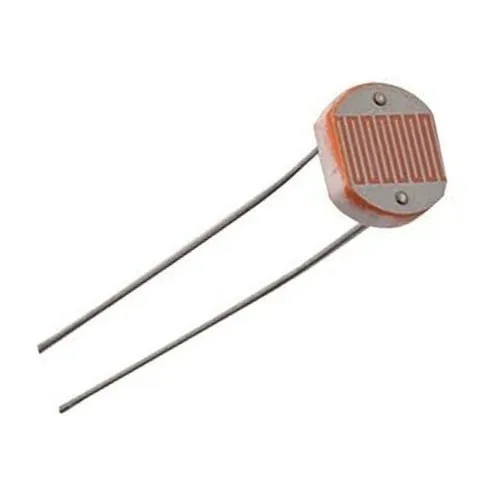

Solar Panel Aligner
Introduction
This study encompasses a thorough examination and implementationofan IoT-driven solar tracking system leveraging Arduino technology. Withthe escalating demand for renewable energy, solar power standsout asa promising solution. To optimize solar panel efficiency, aligningthemwith the sun's trajectory is essential throughout the day. Our projecttackles this by creating an economical, dependable, and scalablesolartracking system.
Steps for the project
Step-1 : Tools
ESP-32
The ESP32 stands out as a versatile and potent microcontroller coupled withaWi-Fi/Bluetooth module, frequently employed in IoT (Internet of Things) endeavours. Renowned for its dual-core processor, ample memory, and wireless connectivitycapabilities, it serves as a cornerstone for various projects.
LDR Sensor
The LDR (Light-Dependent Resistor) sensor operates by adjusting its electrical resistance in response to the incident light. Widely utilized in diverse applicationssuch as automatic lighting systems or projects requiring light-sensitive reactions, it ispivotal for detecting light levels.
Serovo Motor
Functioning as a precision-oriented electric motor, the servo motor excelsincontrolling its angular position. Equipped with a feedback mechanism, typicallyapotentiometer or encoder, it ensures high-accuracy position maintenancethroughcontinuous monitoring.
Jumper Wires
Jumper wires, featuring connector pins at each end, facilitate solder-free connectionsbetween two points. Primarily used with breadboards and prototyping tools, theyenable easy circuit adjustments.
Bread Board
The breadboard serves as a reusable and solderless electronics prototypingtool, streamlining the swift assembly and testing of electronic circuits.
Step-2 : Working - Version 1
Light Sensors (LDRs) positioned on the solar panel detect the sun's position, providing analog data reflecting light intensity. The ESP32 acts as thesystem'scentral processing unit, interpreting the analog data, calculating optimal solar panel angles based on the sun's position, and transmitting control signals to servomotors. The servo motors, in turn, physically adjust the solar panel angles to alignwiththesun's path. A stable power supply, whether from batteries, solar panels, or other sources, isimperative for operating the ESP32, LDRs, and servo motors. TheESP32'senhanced processing power and built-in Wi-Fi and Bluetooth capabilities makeit asignificant upgrade from the Arduino Uno, contributing to greater systemcontrol, data processing, and potential integration with IoT applications. Solar tracking systems operate on a fundamental yet effective principle, trackingthesun's movement in the sky. This involves light sensors, microcontrollers, andservomotors. Light sensors detect the sun's position and intensity, conveying datatothemicrocontroller, which calculates optimal solar panel angles. Control signals arethensent to the servo motors, physically adjusting the panel angles to align withthesun, ensuring continuous optimization for maximum sunlight exposure and subsequentlyhigher energy output throughout the day.
Setup of our project
Step-3 : Working - Version 2
Output of Serial Monitor
Output on blynk app
The results of the project in the serial monitor andblynkapp. On serial monitor we get the temperature and light intensity readings of bothldr. On the blynk app we get the temperature readings from the GY68 sensor usinglabeled value display widget.
Step-4 : Code Used in The Project

Conclusion
The project's solar tracking system serves as an example of the significant potential of IoT technology for enhancing the gathering of solar energy. This technologyshowspotential for several real-world applications due to its cost-effective designandrealtime sun monitoring capability
Its importance goes beyond isolated or off-grid locations where a reliableandeffective power supply is essential. It reduces the requirement for backuppowersources and helps to lower total energy costs by guaranteeing that solar panelsgenerate the highest amount of energy possible. Because of its IoT compatibility, thesystem may be used for predictive maintenance, data analytics, andremotemonitoring, making it an invaluable component of smart grids andurbaninfrastructure.
With the increasing use of renewable energy worldwide, our solar trackingsystemisan essential component of sustainable energy production and a major factor inreducing carbon footprints. In conclusion, our Internet of Things-enabledsolartracking system is a progressive project that will help advance the use of renewableenergy sources and provide environmentally friendly options for a range of sectors. The system is an interesting route for additional study and development in thefieldof solar energy technology because of its potential for growth and improvement.